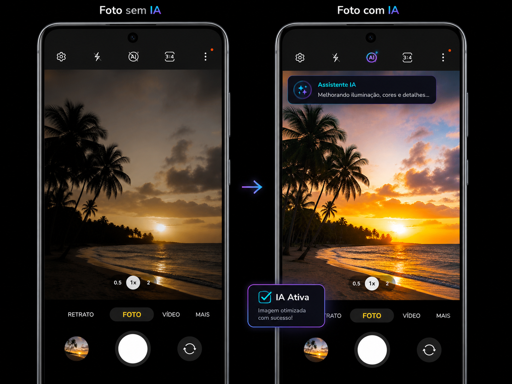
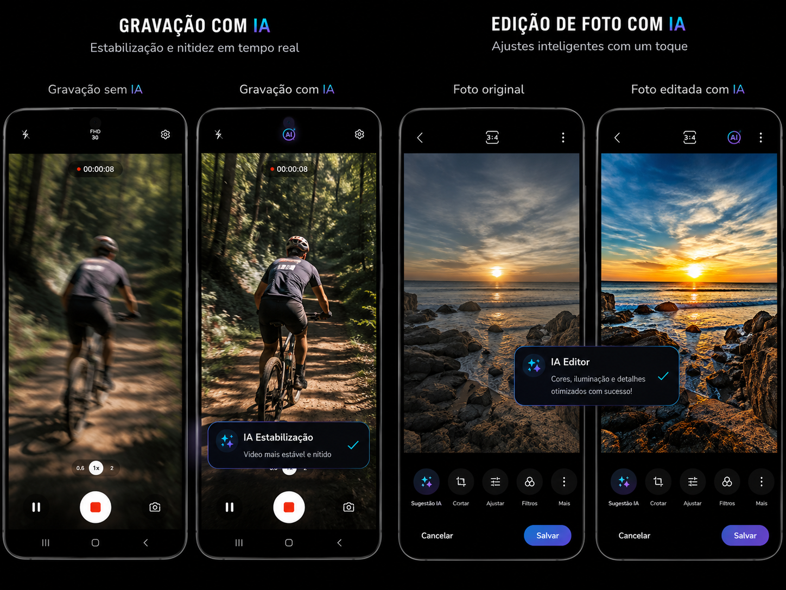
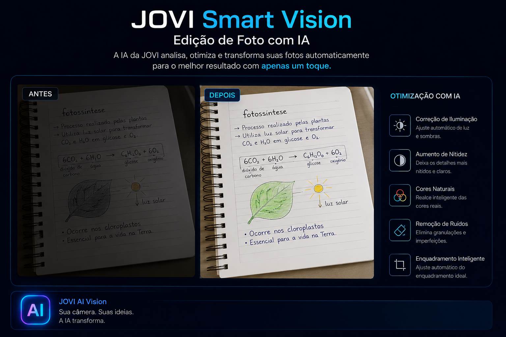

Veja · Entenda · Aprenda
Veja o que a inteligência artificial pode fazer
Pergunte qualquer coisa sobre a câmera
A câmera detecta automaticamente iluminação, objetos e rostos em tempo real.

A estabilização por IA reduz tremores automaticamente durante gravações.

A tecnologia inteligente ajusta foco, brilho e nitidez automaticamente.